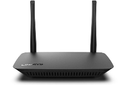

Router
También conocido como enrutador, es un dispositivo de hardware que conecta redes informáticas y dirige el tráfico de datos entre ellas. Actúa como el director de orquesta de tu red doméstica o empresarial, garantizando que los datos lleguen a su destino correcto.
